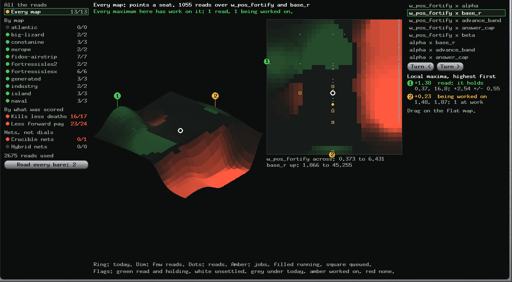
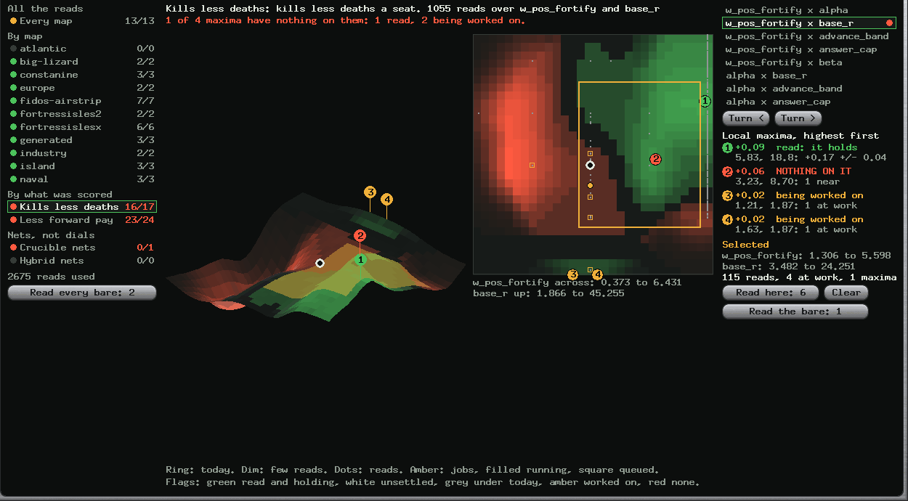
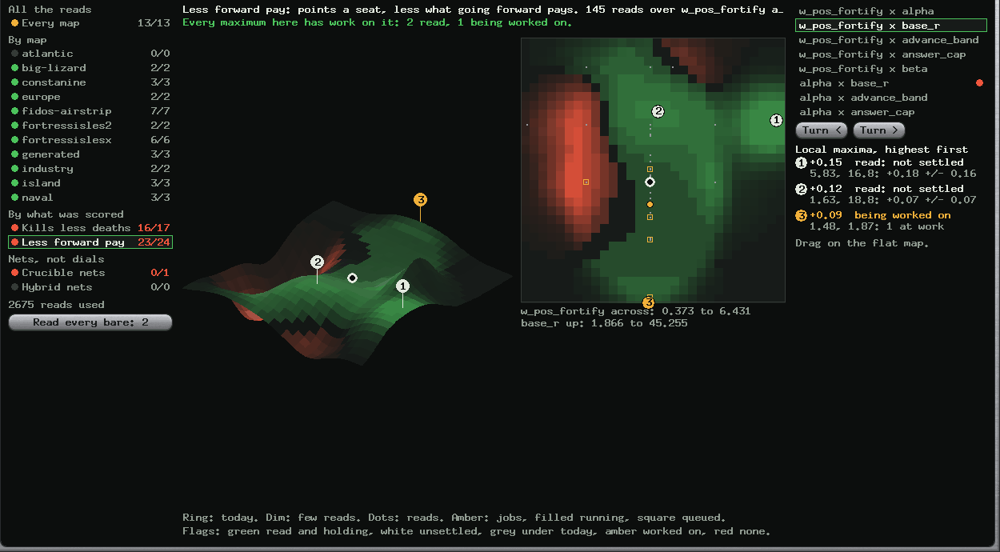
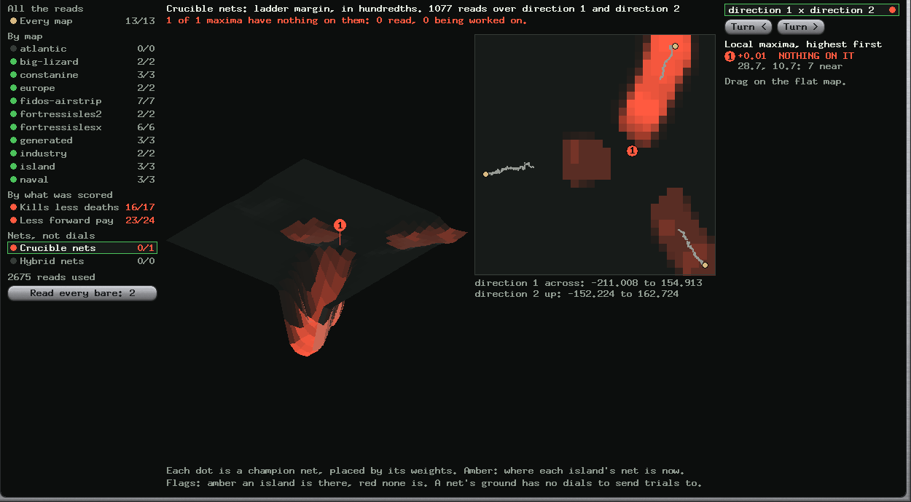

Abstract
Yes, and building it found that the terrain Paul was looking at stood on 109 reads of the 2,675 it should have used. It now draws sixteen datasets: every map, each of eleven maps, kills less deaths, the score less what going forward pays, and both kinds of Crucible net. Each maximum says whether work stands on it: read, being worked on, or nothing on it. A region drawn on a flat map lights up on the surface and can be sent trials. At 18:22, of 88 maxima, 77 had been read, 8 were being worked on and 3 had nothing on them. The picture that matters most is that the score's highest hill stands in the valley of kills less deaths, and disappears when going forward is taken out. No game value changed, and no region has been asked for yet.
Index Terms: response surfaces, search coverage, kernel smoothing, interactive selection.
I. What was wrong with the old one
The terrain read fleet.tsv, whose rows mostly carry no commit or an old one, and a ledger that stopped on 28 October. So 3,651 rows looked like some other game, and it drew from 76 to 109 reads. It also set its heights by the gains promotions claimed, and centred on main, where the fleet stands on the line.
| Before | Now | |
|---|---|---|
| Reads | 109 | 2,675, from every census's own directory |
| Today's defaults | main, w_pos_fortify 6 | the line, 1.5 |
| A read's height | its gain less the gains promotions claimed since | its gain plus how far its day's defaults stood from today's, by a small fit of the dials that have moved |
| Counted on a pair | every read | only reads that moved one of the two dials. A trial of a third dial says nothing of these two |
| A maximum | any rise, including the rim of a pit | falling away on both sides of some line, off the map counting, and not in the lower half of the height |
| A map's read | any | 8 seeds on that map or more. One read of 2 or 3 seeds, +15.50 +/- 0.25 on europe, drew a mountain |
Left out, and said on the page: 2,413 reads of other games, 1,225 of one map, 531 of switches, 157 of whole brains, 406 unfinished or without a reading.
II. The three words
A maximum's reads are those within one kernel of it, about a third to half a doubling.
| Word | Means |
|---|---|
| read | 110 seeds or more stand there. Their mean says if it holds (past two errors over today), falls (past two under), or is not settled |
| being worked on | Fewer, and a job queued or running there |
| nothing on it | Neither |
"Read" means seeds stood there, not that it won. Of the 77 read, 17 hold, 2 fall and 58 are not settled.

w_pos_fortify 0.37.III. What it shows
The fortify trade, as ground. On every map the top is w_pos_fortify 0.37, reading +2.54 +/- 0.55 over 1,930 seeds, the same place as the 0.4 the report held. On kills less deaths that ground is the valley, and the maximum is at 5.83, +0.17 +/- 0.04. With going forward taken out the hill is gone: 0.37 reads +0.10 +/- 0.48. Nobody chose these pictures to agree with A Stale Dial, and they do, because they are largely the same reads.


Maps differ, and most have little to show. Atlantic draws no maximum at all: its reads sit near zero. Fidos-airstrip has seven and fortressislesx six. A map's reads have about 37 seeds at most.
Crucible's islands went apart. Three islands, three separate tracks in weight space, each with its island at the end, in both the plain and the hybrid nets. So they are searching different ground, which is what islands are for. The heights say little: a plain ladder is mostly draws, and the hybrid's margins are mostly negative. There is no dial to send a trial to, so a net's maximum can only be watched.

IV. Selecting a region
Drag on the flat map, or click a maximum in the list. The cells light up on the surface, and the panel says what is inside: reads, jobs, maxima.
- Read here: 6 asks for six trials inside the box.
- Read the bare asks for three trials tight on each maximum of this pair with nothing on it.
- Read every bare does that for all datasets, each place once.
These write QUEUE/regions.json by tools/regions.py. The planner puts them ahead of its own search, spaced evenly on each dial's log scale. They go by the ordinary road: nothing is promoted because a person looked there. A trial sets the two dials and leaves the rest at today's. A job retired before it ran is asked again. The terrains are redrawn at the next poll, so the amber marks appear within a couple of minutes, once the planner has asked.
A test presses, drags and lets go through the screen's own code, and checks the box and the values asked for. I have not pressed these in the running app, and no region has been asked for on the live fleet, because that is a person's choice.
V. Threats and what is open
One hill is counted several times. Each hill is seen through every pair containing its dial: 0.37 appears in five. The 88 are 88 flags, not 88 places. Two dials at a time is a slice of something with 118. Other dials average out, and a trial moving four dials sits on all of its pairs. The move to today's defaults assumes the score adds, and switches a generation flipped are not in it: bridges and escort are off, and those reads are left out. The reads are not random. The search chose them, and read winners more, so a hill is partly where it looked hardest. Which pairs are drawn changes as the fit changes its mind, and a selection is dropped when its pair goes. "Holds" uses each read's own error, and the two proofs that disagreed in A Stale Dial say that error may be small. A net's map is two directions from 400 sampled weights of thousands, and I did not measure how much of the variation they hold.
Unrelated, found while testing: the sftp tests fail now and then here: two different ones, in about one run in three, in code this work did not touch. It is not fixed.
Not drawn: bot styles (8 points, not a surface), the bc nets (one each), the transform's reads (too few so far).
VI. Reproducing this
Q=~/code/treadcore/build/queue/grove
python3 -I tools/terrain.py $Q # every dataset, about 10 s after the first
python3 -I tools/regions.py $Q status # what has been asked
python3 -I tools/plans/board-check.py # regions, among the restResults, Algorhythm, Terrain. Pictures: ORRERY_FRAME_TAB=1 ORRERY_FRAME_DATASET=n ORRERY_FRAME_PAIR=n ORRERY_FRAME_REGION=x0,x1,y0,y1.